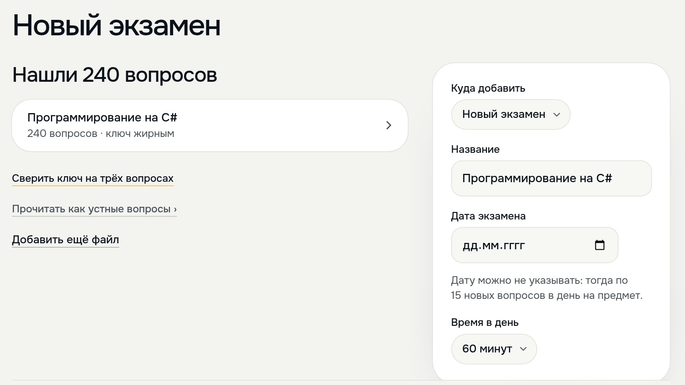

Представление блоков проекта
Meldy читает вопросы кафедры из файла
и составляет план по дням до экзамена
и составляет план по дням до экзамена


1
2
3
1
240 вопросов, верные ответы выделены жирным
2
Студент сам выбирает, сколько минут в день
3
Пропущенный день переносится на следующие
Ещё перенос экзамена, ссылка для группы и Telegram
Теперь экзамены. Студент загружает файл с вопросами кафедры в Word, Excel, TXT или PDF. Meldy находит в нём вопросы. Если у вопроса есть варианты, верный ответ Meldy берёт прямо из файла, по жирному шрифту или пометке. В кадре так нашлись 240 вопросов.
Потом студент указывает дату экзамена и сколько минут в день готов заниматься. Meldy раскладывает вопросы по дням. В последние дни остаётся только повторение. Вопросы пропущенного дня переходят на следующие.
Если дата сдвинулась, есть кнопка «Перенести экзамен», для всей группы или только для себя. Группа получает экзамен по одной ссылке. План на день приходит в Telegram, и вопросы можно решать прямо в чате.
О кадрах: слева запись живого сайта 11 октября 2026 года. Справа «План по дням» того же экзамена 19 октября.